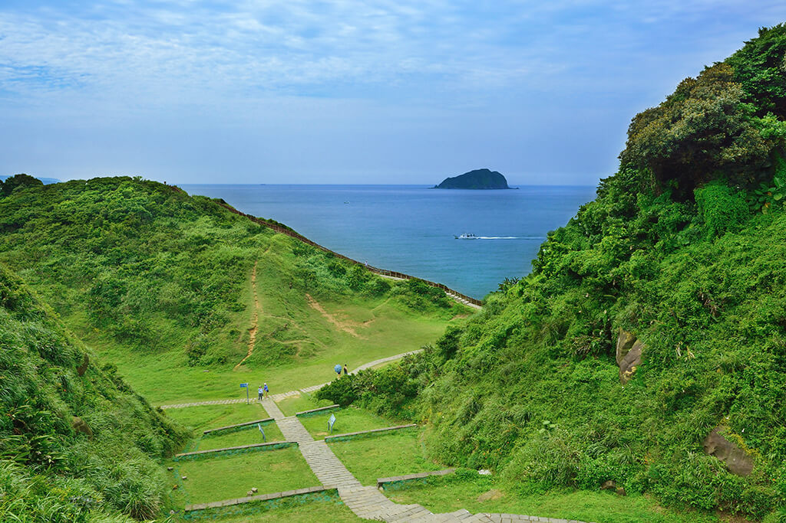

観光スポット

基隆廟口
基隆廟口は基隆市の中心地です。
昔奠済宮というお寺は、漁師たちは安全のためにいつも奠済宮を参拝するに行きました。人々を集めて、時には野台戲があって、食べ物や飲み物を売る屋台を出てきました。
今は、年中無休の屋台にて、米類から麺類の主食、海鮮類、肉類にスイーツや冷菓等、様々なグルメが陳列されています。

中正公園
中正公園は基隆港東側の山丘にあります。
公園の最高点には、白色の大観音像が祀られています。
中正公園前の広場からは基隆市の街が一覧することができます。特に黄昏と夜景がすばらしいです。

和平島公園
和平島公園は基隆港の東側に位置します。
2500万年あまり前、和平島の周囲は果てしない海でした。島は長期間を経て風と波の浸食を受けて、キノコ状石、豆腐岩、海食洞、海食台などの、珍しい地質景観が形成されました。

望幽谷
八斗子は和平島の東南側にある島です。
望幽谷は「忘憂谷」の別名の通り、ここの景色を見ると、すべて不快なことを忘れることができます。
V字の谷間になっており、谷地全体は緑に溢れ、雲一つない空と海を映り合いました。